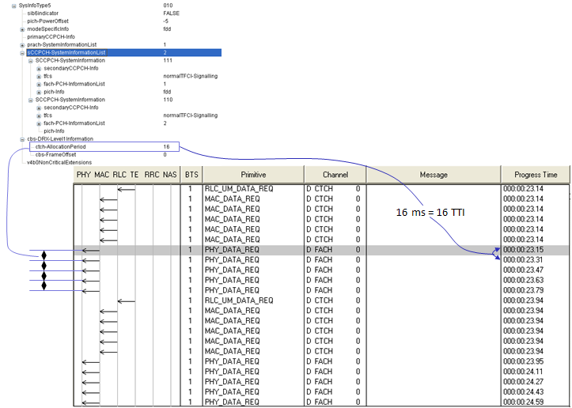
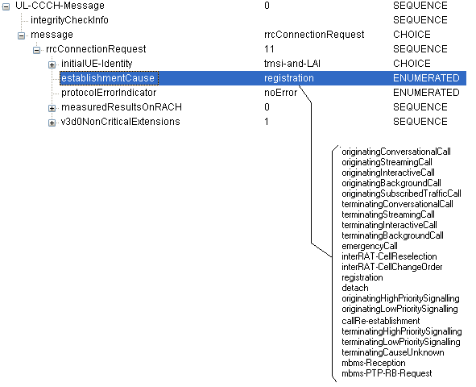
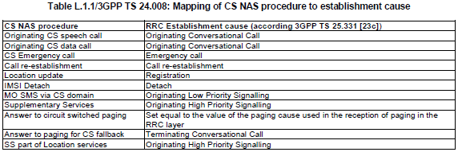
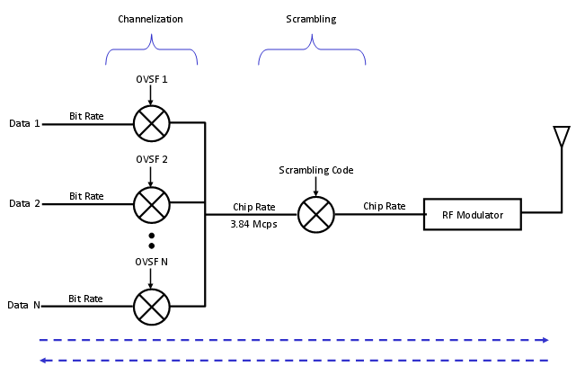
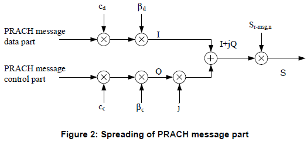

Quick Reference - UMTS Home : www.sharetechnote.com
- 3GPP Release and Main Features
- CBS(Cell Broadcast Service)
- Cell Search Procedure
- Cell Selection - Automatic vs Manual
- Cell Selection - in VPLMN (Cell Reselection)
- CPC (Continous Packet Connectivity)
- CQI
- Compressed Mode
- Constellation (Downlink) - Conceptual
- CPICH Ec/Io measurement report mapping
- Downlink Frame Timing
- DRX/DTX
- E-DPCCH
- E-TFCI Selection
- Frequency Table
- HARQ - HSDPA
- HARQ - HSUPA
- HSDPA Category Table
- HSUPA Category Table
- HSUPA - UL Grant/E-AGCH,E-RGCH
- Location Updating Reject
- Measurement Control and Handover
- P-CCPCH RSCP measurement report mapping
- PRACH Power
- RRC Establishment Cause
- RSSI measurement report mapping
- Scrambling Code
- TFI and TFCI
- Uplink Frame Timing
3GPP Release and Main Features
< Release 7 >
- Higher Order Modulation (DL 64 QAM, UL 16 QAM)
- CPC (Continous Packet Connectivity, TDX + DRX)
- Enhanced F-DPCH
- Improved L2 (for Higher downlink data rate)
- Enhanced Cell_FACH for downlink
- Downlink MIMO
< Release 8 >
- Dual Cell HSDPA
- Combination of 64 QAM and MIMO
- Improved L2 (for Higher uplink data rate)
- Enhanced Cell_FACH for uplink
- CS over HSPA
- Serving Cell Change Enhancement
- HS-DSCH Reception in Cell FACH
< Release 9 >
- Dual Cell HSUPA
- Dual Band HSDPA
- Dual Cell HSDPA + MIMO
- 2ms TTI Uplink range extension
< Release 10 >
- Four Carrier HSDPA
CBS is a kind of Short Message service. Then what is the difference between SBS and SMS ? There may be two main differences
- SMS is one to one message and CBS is a message broadcast to many people simultaneously.
- SMS can be bidirectional (you can send and receive the message) and CBS is usually unidirectional (subscribers can only receive the message).
- 25.324 Broadcast/Multicast Control BMC
- 23.041 Technical realization of Cell Broadcast Service (CBS)



Cell Search procecess in WCDMA would be described as follows (For the detailed understanding, I would recommend you to study each of the physical channels involved in the following description).
i) Every cell is tranmitting its scrambling code(Primary Scrambling Code) via CPICH.
ii) UE detect the cell power, primary scrambling code and some addition info for compensating demodulation process
iii) UE detect P-SCH (Primary Synchronization Code) and figure out slot boundary (start and end of each slot)
iv) UE detect S-SCH (Primary Synchronization Code) and figure out frame bounday (start and end of each frame)
v) UE detect P-CCPCH and decode MIB. Through this MIB, UE can figure out SFN.
Cell Selection - Automatic vs Manual
There are two main factors influencing the cell selection process. One factor is Cell Power and the other one is various PLMN configuration. I will focus on PLMN based selection here but in many cases you have to consider both Cell Power and PLMN at the same time and the selection process can be more complicated in this case.
Usually many phones provide two options for you to select from for selecting a cell to camp on. One is Automatic and the other one is Manual. There is nothing for me to talk about 'Manual' mode since it is so straightforward. In manual mode, the UE camps on whatever network that user specified. If the UE cannot find the specified cell or rejected by the cell, it would just give up without trying anything else.
The issues come in when the mode is set to be 'Automatic'. 'Automatic' means "Select a cell based on a predefined rule". Then your question would be "What is the predefined rule?". Even though 3GPP provide overal guidelines, the detailed implementation would be up UE makers and the requirement from each specific network operator.
General guideline especially guidelines regarding "PLMN" is as follows :
i) Select the cell with HPLMN (Home PLMN) or EHPLMN(Equivalent HPLMN)
ii) If UE lose coverage for HPLMN or EHPLMN, then try find the cell with VPLMN.
More specifically, in Automatic mode, UE select the Cells with PLMNs in the following order
i) either the HPLMN (if the EHPLMN list is not present or is empty) or the highest priority EHPLMN that is available (if the EHPLMN list is present);
ii) each PLMN/access technology combination in the ‘User Controlled PLMN Selector with Access Technology’ data file in the SIM (in priority order);
iii) each PLMN/access technology combination in the ‘Operator Controlled PLMN Selector with Access Technology’ data file in the SIM (in priority order);
iv) other PLMN/access technology combinations with received high quality signal (GSM – RLA ≥ -85 dBm, UTRAN FDD - CPICH RSCP above -95 dBm) in random order;
v) other PLMN/access technology combinations in order of decreasing signal quality.
Cell Selection - in VPLMN (Cell Reselection)
If UE has camped on to the cell with VPLMN and is in IDLE mode, it has to perform following procedures
i) periodically attempts to obtain service on its HPLMN (if the EHPLMN list is not present or is empty) or one of its
EHPLMNs (if the EHPLMN list is present)
ii) (if failed in previous step) periodically attempts to a higher priority PLMN/access technology combinations listed in ‘User Controlled PLMN Selector’ or ‘Operator Controlled PLMN Selector’
I said the term "periodically". Then how this "peridicity" is determined ?
The periodicity T minutes may be stored in the SIM (Higher Priority PLMN search period), T is either in the range 6 minutes to 8 hours in 6 minute steps or it indicates that no periodic attempts shall be made. If no value is stored in the SIM, a default value of 60 minutes is used
CPC (Continous Packet Connectivity)
Let's suppose a situation, say Web browsing for example. While you are reading a page, you are not downloading any data and there are no data communication between UE and the network. During this time, usually RRC state is put into Cell_FACH and Cell_PCH. When you finish reading the page and try to go next page, in this case the RRC state should change back into Cell_DCH.
Another way to improve the problem related to RRC State changes would be to increase the data rate at Cell_FACH. Theoretically you can transmit the data in Cell_FACH in previous technology and ideally the throughput is around 34 K. But if you really try it, you may notice the real throughput is much less than this. For HSPA+, the throuhgput for Cell_FACH has been much increased by Enhanced Cell_FACH.
To save battery consumption, UE can repeat very short cycles of 'sleeping mode' and 'wake up' mode when there is no data traffic and normally this repetition cycles is much shorter than DCH<--> FACH <--> PCH cycles. This kind of 'sleeping' and 'wake up' cycles are called DTX, DRX.
If you apply all these techniquest described above in wise combination, you would achieve such a status as
i) Users feels like they are continuously connected to the network (User experience very short latency as if it is always connected).
ii) Even with this kind of user experience, energy consumption (current consumption) on UE can be minimized
All the combination of this technique to achieve such a user experience is called "CPC". It means CPC is a collective terminoloty for a set of technologies, not any specific single technology. It implies that to understand CPC requires a lot of efforts -:)
Just in short, CPC is a combined technology of all of the following features.
- UL-DTX
- DL-DRX
- HS-SCCH orders
- HS-SCCH-less
- New UL-DPCCH slot format #4
- Cell DCH using E-DCH/HS-DSCH
- SRBs mapped on E-DCH/HS-DSCH with use of F-DPCH
CQI stands for Channel Quality Indicator. As the name implies, it is an indicator carrying the information on how good/bad the communication channel quality is. This CQI is for HSDPA. (LTE also has CQI for its own purpose).
CQI is the information that UE sends to the network and practically it implies the following two
i) Current Communication Channel Quality is this-and-that..
ii) I (UE) wants to get the data with this-and-that transport block size, which in turn can be directly converted into throughput
In HSDPA, the CQI value ranges from 0 ~ 30. 30 indicates the best channel quality and 0,1 indicates the poorest channel quality. Depending which value UE reports, network transmit data with different transport block size. If network gets high CQI value from UE, it transmit the data with larger transport block size and vice versa.
What if network sends a large transport block even though UE reports low CQI, it is highly probable that UE failed to decode it (cause CRC error on UE side) and UE send NACK to network and the network have to retransmit it which in turn cause waste of radio resources.
What if UE report high CQI even when the real channel quality is poor ? In this case, network would send a large transport block size according to the CQI value and it would become highly probable that UE failed to decode it (cause CRC error on UE side) and UE send NACK to network and the network have to retransmit it which in turn cause waste of radio resources.
How UE can measure CQI ? This is the most unclear topic to me. As far as I know, there is no explicit description in any standard on the mechanism by which the CQI is calculated, but it is pretty obvious that the following factors play important roles to CQI measurement.
- signal-to-noise ratio (SNR)
- signal-to-interference plus noise ratio (SINR)
- signal-to-noise plus distortion ratio (SNDR)
It is unclear how these factors are used and whether there is any other factors being involved. I was told the detailed CQI measurement algorithm is up UE implementation (chipset implementation).
Regarding the influce of CQI on total throughput, refer to CQI vs Throughput in "Throughput" page.
Before the handover, UE normally measure the cell power (signal quality) of the target cell and report it to the network, so that network can make a decision whether to allow UE to handover to the target cell or not.
It is not a big issue to measure the signal quality of the target cell if the target cell is at the same frequency as the current cell (Intrafrequency measurement). But there would be an issue when the target cell is at a different frequency from the current cell (Interfrequency measurement). Just in terms of logical sense of view, the simplest solution for Interfrequency measurement, the simplest solution for this would be to implement two RF tranciever on UE. However, there are some practical problems with this kind of two tranciever solution. One of the problems is cost issue. It would require additional cost to implement the additional tranciever. The other problem would be the possible interference between the current frequency and target frequency especially when the current frequency and target frequency are close to each other.
So they come out with a special techique called "Compressed Mode". The idea of the compressed mode is to create a small gap during which no transmission and reception happens. since there is no signal transmission and reception during the gap, UE can switch to the target cell and perform the signal quality measurement and come back to the current cell.
To make this work seamlessly, there should be a well established agreement between UE and Network about the gap definition (e.g, Starting Position of the Gap, Gap length, number of Gaps etc) and this agreement is established by a couple of RRC messages (e.g, Measurement Control, Physical Channel Reconfiguration etc) as follows.
| | +-modeSpecificInfo ::= CHOICE [fdd]
| | | +-fdd ::= SEQUENCE [011]
| | | +-defaultDPCH-OffsetValue ::= INTEGER OPTIONAL:Omit
| | | +-dpch-CompressedModeInfo ::= SEQUENCE OPTIONAL:Exist
| | | | +-tgp-SequenceList ::= SEQUENCE OF SIZE(1..maxTGPS[6]) [1]
| | | | +-TGP-Sequence ::= SEQUENCE [1]
| | | | +-tgpsi ::= INTEGER (1..maxTGPS[6]) [1]
| | | | +-tgps-Status ::= CHOICE [activate]
| | | | | +-activate ::= SEQUENCE
| | | | | +-tgcfn ::= INTEGER (0..255) [0]
| | | | +-tgps-ConfigurationParams ::= SEQUENCE [000000] OPTIONAL:Exist
| | | | +-tgmp ::= ENUMERATED [fdd-Measurement]
| | | | +-tgprc ::= INTEGER (0..511) [0]
| | | | +-tgsn ::= INTEGER (0..14) [4]
| | | | +-tgl1 ::= INTEGER (1..14) [7]
| | | | +-tgl2 ::= INTEGER OPTIONAL:Omit
| | | | +-tgd ::= INTEGER (15..270) [270]
| | | | +-tgpl1 ::= INTEGER (1..144) [12]
| | | | +-dummy ::= INTEGER OPTIONAL:Omit
| | | | +-rpp ::= ENUMERATED [mode0]
| | | | +-itp ::= ENUMERATED [mode0]
| | | | +-ul-DL-Mode ::= CHOICE [ul-and-dl]
| | | | | +-ul-and-dl ::= SEQUENCE
| | | | | +-ul ::= ENUMERATED [sf-2]
| | | | | +-dl ::= ENUMERATED [higherLayerScheduling]
| | | | +-dl-FrameType ::= ENUMERATED [dl-FrameTypeA]
| | | | +-deltaSIR1 ::= INTEGER (0..30) [10]
| | | | +-deltaSIRAfter1 ::= INTEGER (0..30) [5]
| | | | +-deltaSIR2 ::= INTEGER OPTIONAL:Omit
| | | | +-deltaSIRAfter2 ::= INTEGER OPTIONAL:Omit
| | | | +-nidentifyAbort ::= INTEGER OPTIONAL:Omit
| | | | +-treconfirmAbort ::= INTEGER OPTIONAL:Omit
Let's look into the definition of each parameters used about Compressed Mode.
|
Parameter |
Description |
|
TGSN |
Transmission Gap Starting Slot Number |
|
TGL1 |
Transmission Gap Length 1 |
|
TGL2 |
Transmission Gap Length 2 |
|
TGD |
Transmission Gap Distance |
|
TGPL1 |
Transmission Gap Pattern Length 1 |
|
TGPL2 |
Transmission Gap Pattern Length 2 |
|
TGPRC |
Transmission Gap Repetition Count |
|
TGCFN |
Transmission Gap Connection Frame Number |
Constellation (Downlink)- Conceptual
If you combine the following three sections in 25.213, you will have a overall downlink physical channel flow as shown below.
-
5.1 Spreading (Figure 8)
-
5.1.5 Channel combining (Figure 9)
-
5.3.2 Modulation (Figure 11)

Assuming the all the physical channel for data transfer is using QPSK (Release 99), the constellation is shown as below. (Graph on left shows Code Domain Power for each channel and the right side graph shows the constellation).

When I first saw this constellation, I was very confused because it is so much different from my expectation of QPSK constellation.
This kind of complicated constallation comes from the vector summation of multiple QPSK with different amplitudes. If only one channel is transmitted, you would have a normal QPSK constellation as you expected, but if multiple channel (multiple QPSK) are summed, you would get various different patters depending on how many channels are summed and what is the amplitude of each QPSK channel.
Assuming there is just two QPSK channels are being transmitted, I created two example cases with two different amplitude combination as follows.

Following sequence of graph show you how each of the constellation spot at the final result can created from two original QPSK constellation.

CPICH Ec/Io measurement report mapping
RRC Connection Request and some Measurement Report message carries the CPICH measured value as follows. But the value itself is not a dB or dBm value. There is a predefined table that maps this value to the real dBm value.
+-rrcConnectionRequest ::= SEQUENCE [11]
+-initialUE-Identity ::= CHOICE [tmsi-and-LAI]
+-establishmentCause ::= ENUMERATED [registration]
+-protocolErrorIndicator ::= ENUMERATED [noError]
+-measuredResultsOnRACH ::= SEQUENCE [0] OPTIONAL:Exist
| +-currentCell ::= SEQUENCE
| | +-modeSpecificInfo ::= CHOICE [fdd]
| | +-fdd ::= SEQUENCE
| | +-measurementQuantity ::= CHOICE [cpich-Ec-N0]
| | +-cpich-Ec-N0 ::= INTEGER (0..63) [41]
Following table comes from 3GPP 25.133.

Once you complete the cell search process described above, UE can figure out the following information about the timing.
i) Exact phase reference for downlink channels from CPICH (This is not the timing parameter, but this would very important factors to decode other channels including Timing/Sync related channels).
ii) Exact start timing of each slots from P-SCH
iii) Exact start timing of each frame from S-SCH
iv) System Frame Number for each frame from P-CCPCH (MIB)
Once UE get all the information listed above, the timing for other channels can be deduced by the following diagram (This diagram came from 3GPP TS 25.211). For example, S-CCPCH is transmitted at the multiples of 256 chips delay from the start of CPICH(Start of frame timing). And PICH is transmitted at the specified timing before S-CCPCH.
For the details of these timing value, refer to 25.211 - 7 Timing relationship between physical channels - 7.1 General
Some of these timing offsets are set by higher layer signaling message (e.g, SIB, RRC Connection Setup, Radio Bearer Setup).
S-CCPCH TimingOffset is specified by SIB5 elements : sCCPCH-SystemInformationList.SCCPCH-SystemInformation[0].secondaryCCPCH-Info.modeSpecificInfo.fdd.timingOffset

DRX stands for "Discontinous Reception" and DTX stands for "Discontinous Transmission". When you are talking about 'Reception' and 'Transmission', you may often get confused with 'direction of data flow'. Is it from 'UE to Network' or 'Network to UE'. At least, I got confused so often with this.
So let's make it clear about 'who is receiving ?' and 'who is transmitting' when we are talking about DRX and DTX. The answer is 'UE'. Therefore, DRX means 'Discontinous Reception by UE' and DTX means 'Discontinous Transmission by UE'.
Then what does it mean by 'Discontinous' ? To get clear understanding of this word, let's think about 'what does it mean by 'continous' ?'. 'Continous' is a ordinary mode of operation in most of the situation where we use mobile phone. Does 'Continous' mean that UE is continously (always) receiving some data and is continously (always) transmitting data ? No, it does not. UE cannot receive any data when Network does not send any data to it and UE cannot transmit any data when it does not have any data to send. 'Continuous transmission/Continuous Reception' in this context mean that 'UE is continuously (always) ready to recieve data and is continously (always) ready to transmit the data.
To be ready to recieve/transmit something, UE should be 'ON'. So Continous reception/Continous transmission means that "UE is always ON(Wake-up mode)".
What's wrong with UE being always 'ON'. You many easily figure out that it will cause a lot of battery consumption.
To save this kind of battery consumption, they invented a special mechanism called 'Discontinous Reception/Transmission'. 'Discontinous Transmission' and 'Discontinous Reception' means that UE is in Sleeping Mode most of the time and only periodically 'Wake up' to receive or transmit the data.
Overall concept would sound simple, but you may get confiused again trying to understand the detailed parameter related to DTX and DRX. These parameters are specified in Radio Bearer Message as follows.
First I thought we only need 'Periodicity of DTX/DRX' and 'Duration of ON time', but there are many other parameters are involved.
| +-dtx-drx-TimingInfo ::= SEQUENCE OPTIONAL:Exist
| | +-timing ::= CHOICE [newTiming]
| | +-newTiming ::= SEQUENCE
| | +-enablingDelay ::= ENUMERATED [radio-frames-0]
| | +-ue-dtx-drx-Offset ::= INTEGER (0..159) [0]
| +-dtx-drx-Info ::= SEQUENCE [11] OPTIONAL:Exist
| | +-dtx-Info ::= SEQUENCE [01] OPTIONAL:Exist
| | | +-e-dch-TTI-Length ::= CHOICE [dtx-e-dch-TTI-10ms]
| | | | +-dtx-e-dch-TTI-10ms ::= SEQUENCE
| | | | +-ue-dtx-Cycle1-10ms ::= ENUMERATED [sub-frames-10]
| | | | +-ue-dtx-Cycle2-10ms ::= ENUMERATED [sub-frames-20]
| | | | +-mac-dtx-Cycle-10ms ::= ENUMERATED [sub-frames-10]
| | | +-ue-dtx-cycle2InactivityThreshold ::= ENUMERATED [e-dch-tti-8]
| | | +-ue-dtx-cycle2DefaultSG ::= INTEGER OPTIONAL:Omit
| | | +-ue-dtx-long-preamble-length ::= ENUMERATED [slots-4] OPTIONAL:Exist
| | | +-mac-InactivityThreshold ::= ENUMERATED [e-dch-tti-8]
| | | +-cqi-dtx-Timer ::= ENUMERATED [sub-frames-32]
| | | +-ue-dpcch-Burst1 ::= ENUMERATED [sub-frames-1]
| | | +-ue-dpcch-Burst2 ::= ENUMERATED [sub-frames-1]
| | +-drx-Info ::= SEQUENCE OPTIONAL:Exist
| | | +-ue-drx-Cycle ::= ENUMERATED [sub-frames-10]
| | | +-ue-drx-Cycle-InactivityThreshold ::= ENUMERATED [sub-frames-32]
| | | +-ue-GrantMonitoring-InactivityThreshold ::= ENUMERATED [e-dch-tti-8]
| | | +-ue-drx-GrantMonitoring ::= BOOLEAN [TRUE]
| | +-uplink-DPCCHSlotFormatInformation ::= ENUMERATED [slot-format-1]
Now let's look into the detailed parameters. Let's think about DTX part first. (I will draw some diagram later when I have more time, but now I will just describe it verbally). The most important parameters for DTX are as follows.
| | | +-e-dch-TTI-Length ::= CHOICE [dtx-e-dch-TTI-10ms]
| | | | +-dtx-e-dch-TTI-10ms ::= SEQUENCE
| | | | +-ue-dtx-Cycle1-10ms ::= ENUMERATED [sub-frames-10]
| | | | +-ue-dtx-Cycle2-10ms ::= ENUMERATED [sub-frames-20]
| | | | +-mac-dtx-Cycle-10ms ::= ENUMERATED [sub-frames-10]
First think about the cycles first. You see three different cycles here. In this example, we have the following three cycles.
ue-dtx-Cycle1-10ms ::= ENUMERATED [sub-frames-10] = 20 ms (2 ms/subframe x 10 subframe)
ue-dtx-Cycle2-10ms ::= ENUMERATED [sub-frames-20] = 40 ms (2 ms/subframe x 20 subframe)
mac-dtx-Cycle-10ms ::= ENUMERATED [sub-frames-10] = 20 ms(2 ms/subframe x 10 subframe)
The overall procedure of DTX operation goes as follows.
i) UE get's into sleeping mode and ue-dtx-Cycle1-10ms starts
ii) UE wake up when ue-dtx-Cycle1-10ms expires and stay up for a 'ON-duration'.
iii) If there is no E-DCH frame to be transmitted and ue-dtx-Cycle1-10ms is expired, it will get into sleeping mode and ue-dtx-Cycle2-10ms timer starts.
iv) UE wake up when ue-dtx-Cycle2-10ms timer expires and stay up for 'ON-duration'.
v) If there is no E-DCH frame to be transmitted and ue-dtx-Cycle1-10ms is expired, it will get into sleeping mode and ue-dtx-Cycle1-10ms timer starts.
vi) repeat the step step ii)~v).
The question is when UE wake up, how long it should stay 'up' ? In another words, how the 'ON time' is determined.
The 'ON time' is determined by e-dch-TTI-Length ::= CHOICE [dtx-e-dch-TTI-10ms]. In this example, the ON time is 10 ms.
One thing you notice is that ue-dtx-Cycle1-10ms and ue-dtx-Cycle2-10ms is alternating here.
In the procedure described above, we only mentioned about ue-dtx-Cycle1 and ue-dtx-Cycle2. Then what is the 'mac-DTX-Cycle' ? Simply put this is DTX cycle timer with the highest priority. In other words, even though UE would be in 'sleep mode' according to ue-dtx-Cycle1-10ms and ue-dtx-Cycle2-10ms, if it gets into 'ON period' of mac-dtx-Cycle-10ms, it should wake up right away and transmit the data.
Pretty complicated, right ? But it is even more complicated when it is really working on in real environment since we have to consider some additional factors as well. The only way for you to understand this is to collect as much example as possible to show you very diverse situation of DTX. Here goes one example, but I will keep adding more examples later.

Now let's look into DRX operation. The DRX cycle is specified as shown below. It seems a little bit simpler than DTX cycle configuration.
| | +-drx-Info ::= SEQUENCE OPTIONAL:Exist
| | | +-ue-drx-Cycle ::= ENUMERATED [sub-frames-10]
| | | +-ue-drx-Cycle-InactivityThreshold ::= ENUMERATED [sub-frames-32]
The overall procedure is as follows.
i) UE gets into sleeping mode.
ii) UE wakes up when ue-drx-Cycle starts and stay up for one HS-PDSCH TTI.
iii.a) If there is no HS-PDSCH data for the UE during the 'ON time', it gets into sleeping mode.
iii.b) If there is HS-PDSCH data for the UE during the 'ON time', UE continue to stay on for the duration of ue-drx-Cycle-InactivityThreshold.
iii.c) if there is another HS-PDSCH data for the duration of of ue-drx-Cycle-InactivityThreshold, ON-time get extended for another ue-drx-Cycle-InactivityThreshold from the reception of the data.
iii.d) repeat step iii.a)~iii.c)
iv) repeat the steps ii)~iii)
You may think 'why UE need to go through such a complicated process described in the step iii ?'. Logic is simple. If UE receives a data during the short period of 'ON-time', it is highly probably that there is another data coming right next TTI. So instead of getting into the sleeping mode right away just according to ue-drx-Cycle, it stay awake a little bit more not to cause too much delay for the downlink traffic.
As DPCCH carries the information required to decode DPDCH in R99, E-DPCCH carries the information required to decode E-DPDCH in HSUPA. E-DPCCH carries 10 bits structured as follows.
|
E-TFCI (7 bits) |
RSN (2 bits) |
Happy bit (1 bit) |
E-TFCI : It stands for "E-DCH Transport Format Combination Indicator" and indicates the transport format being transmitted simultaneously on E-DPDCHs. The E-TFCI tells the receiver the transport block size coded on the E-DPDCH. From this value, the reciever (Node B) can figure out how many E-DPDCHs are transmitted in parallel and what spreading factor is used.
RSN : It stands for Retransmission Sequence Number meaning as follows :
- 00 : New Transmission
- 01 : First Retransmission
- 10 : Second Retransmission
- 11 : Higher than Second Retransmission
Happy bit : It carries the information whether the UE is content with the current data rate (Grant) allocated by the network or not.
Uses Synchronous HARQ
The terminal should keep the unacknowledged data in the memory for any possible retransmission
Both Soft(Chasing) combining and Incremental Redundancy can be applicable.
< 10 ms TTI >
Max 4 HARQ Process are being used.
< 2 ms TTI >
Max 8 HARQ Process are being used.
Following Table comes from TS 25.306.

| HSUPA category |
Maximum |
Minimum spreading factor |
Support for 10 and 2 ms HSUPA TTI |
Maximum number of bits transmitted within a 10 ms HSUPA TTI |
Maximum number of bits transmitted within a 2 ms HSUPA TTI |
Maximum Bit rate |
| Category 1 | 1 | SF4 | 10 ms TTI only | 7296 | - | 0.73 Mbps |
| Category 2 | 2 | SF4 | 10 ms and 2 ms TTI | 14592 | 2919 | 1.46 Mbps |
| Category 3 | 2 | SF4 | 10 ms TTI only | 14592 | - | 1.46 Mbps |
| Category 4 | 2 | SF2 | 10 ms and 2 ms TTI | 20000 | 5837 | 2.92 Mbps |
| Category 5 | 2 | SF2 | 10 ms TTI only | 20000 | - | 2.00 Mbps |
| Category 6 | 4 | SF2 | 10 ms and 2 ms TTI | 20000 | 11520 | 5.76 Mbps |
HSUPA - UL Grant/E-AGCH,E-RGCH
In HSDPA case, data source is NodeB and destination is UE. Since Network (the data source) is the master and it has all the authorities for data transmission scheduling, it doesn't need any Grant ("approval for data transmission"). Basically Network can transmit the data anytime it is ready. But in HSUPA case the situation is different. The data source is UE and Network is data sinc(reciever), but UE is not the master of the scheduling. Network is scheduling master all the time. It means that in HSUPA, the transmitter (UE in this case) has to have "approval for transmission" from the data reciever (Network in this case). The "Approval for transmission" is called "UL Grant", and overall mechanism for UL Grant and data transmission in HSUPA goes as follows.
As you see, there are two different types of UL Grant called "Absolute Grant" carried by AGCH(Absolute Grant Channel) and "Relative Grant" carried by RGCH(Relative Grant Channel).
Absolute Grant is being transmitted by the network every TTI and it is transmitted to the all UE communicating to the network.
Relative Grant can be transmitted only at the TTI in which PHICH is not transmitted.

The value for the Absolute Grant can be 0 ~ 31. Except the value 0~1. All the remaining value is mapped to a certain level of power value that UE can use for data transmission. (At the beginning, I was so confused about this value. When we say "Grant", I expected each of the value would mean "Yes, you can transmit the data and this is the data rate you can transmit". But what I see from the following Absolute Grant table is "Here is the amount of power you can use for the data transmission".
Then you may ask "Is there any predefined algorithm running on UE side which maps this power value to the real data rate ?".
Excellent question ! Yes, there is. UE is performing a special E-TFCI selection algorithm based on how much power it can use for data transmission and this Grant value determines "how much power is available for the data transmission".
Following is Absolute Grant table from 25.212 v9.4.0.

Now let's look into the Relative Grant. Relative Grant carries three different status (Command), UP, HOLD, DOWN and the meaning of this command is defined in 25.212 as follows.

This is a NAS message which is sent to UE when the UE is not allowed to register to the specific network or a specific Location Area.
< Cause #11 - PLMN not allowed’ >
Network send this message when a UE tries to camp on the PLMN (usually VPLMN) which is not allowed for the UE. When it recieves, UE has to do following steps.
i) UE has to store this PLMN in forbidden PLMN list in USIM
UE has to remove this PLMN from 'forbidden LPLMN' list in the following cases.
i) UE is switched off
ii) USIM is removed
iii) User select the PLMN in Manual Selection Mode and it gets accepted by the network.
< Cause #12 - LA not allowed’ >
When a UE have a ‘regionally restricted service’ where it can only obtain service on certain LAs and it attempts to camp on a cell of an LA for which it does not have service entitlement, it recieves the Location Update Reject with Cause #12. When it recieves, UE has to do following steps.
i) UE has to store this LAI in the 'forbidden LAs for regional provision of service' list in UE so that it would not keep retrying the location updating process.
ii) UE gets into 'Limited Service' state.
iii) UE initiate Cell Selection Process
UE has to remove this LAI from 'forbidden LAs for regional provision of service' list in the following cases.
i) UE is switched off
ii) USIM is removed
< Cause #13 - ‘roaming not allowed in this LA’ >
When a UE recieves the Location Update Reject with Cause #13, UE has to do following steps.
i) UE has to store this LAI in the 'forbidden LAs for roaming' list in UE so that it would not keep retrying the location updating process.
ii) UE has to initiate PLMN selection process (not Cell Selection Process).
< Cause #15 - ‘No Suitable Cells In LA’ >
When a UE recieves the Location Update Reject with Cause #15, UE has to do following steps.
i) UE has to store this LAI in the 'forbidden LAs for roaming' list in UE so that it would not keep retrying the location updating process.
ii) UE has to searches for a suitable cell in the same PLMN but belonging to an LA which is not in the ‘forbidden LAs for roaming’ list
Measurement Control and Handover
I got a question long time ago, saying "Why we see measurement control/measurement report almost always in Handover procedure ?"
In real live network, it would be common to perform 'Measurement Control' both for SHO and HHO. But purely in terms of technology, 'Measurement Control' and 'Measurement Report' is not a mandatory part for any Handover process. If I explain these two procedure in a very simplified (a little bit over simplified) manner, I would say
i) Handover - Changing a communication cell from one to another, or changing the number of communication cell to one to another.
ii) Measurement Control - Ordering UE to perform a specific measurement (e.g, the signal quality of the current cell or the signal quality of another cell).
Basically these two procedures are independent.
But in reality, most of network operator combine these two process mainly to improve the successbility of the handover.
For example, let's suppose that there are two cells (let's call them Cell A, Cell B respectively) and a UE is now communicating to cell A and now your network is trying to let UE change the communication cell from Cell A to Cell B. The simplest way would be to send UE a handover command, saying "change Cell from A to B". But what if the cell B is not ready to communicate with your UE. For example, the signal quality between Cell A and UE is so bad and it will almost for sure that the call would drop as soon as the UE changes the cell ?
Do you still want to change the cell ?
The answer would be No.
Main for this kind of reason, the network try to make it sure that the target cell (the UE is handed over to) is good enough condition before trying handover. That's why in most live network log, you would see measurement control/measurement report message before the handover.
P-CCPCH RSCP measurement report mapping
Following Table is from 3GPP 25.331
Initial PRACH (The first PRACH that UE transmit) is determined by the following formula.
Initial RACH Preamble Power = Primary CPICH TX Power – CPICH_RSCP + UL_Interference + Constant Value
CPICH_RSCP is the power directly measured by UE and all other parameters are calculated (obtained) from system information. The related parameter and system information is as follows.
|
System Information |
Information Element |
Example Value |
|
SIB3 |
Maximum Allowed UL Tx Power |
21 dBm |
|
SIB5 |
Primary CPICH Power |
-8 dBm |
|
Power Ramp Step |
3 dB |
|
|
Mmax |
2 |
|
|
NB01min |
10 |
|
|
NB02max |
10 |
|
|
SIB7 |
UL Interference |
-92 |
If UE fail to get AICH for the PRACH, it increment the PRACH power by Power Ramp Step (SIB5) and transmit the PRACH again. UE repeat this process until it gets AICH or it retried the specific number specified in SIB5.
Following screenshot is an example of PRACH transmission and retransmission. This is from a test resultl of 34.121 8.4.2.1. In this test case, Network intentionally does not send AICH so that UE keep sending PRACH with specified power increment in the specified number of times.
Every RRC Connection Request message has its own establishmentCause and understanding the exact meaning of each of these establishment cause would help you with troubleshooting in many cases. In ASN definition, it has a long list of establishmentcause as follows.

You would have to surf through many different specification to find the descriptions for all of these causes, but you would find a list of the most commonly used establishmentcause from the following table defined in 24.008.


RSSI measurement report mapping
Following table comes from 25.133.
TFI stands for Transport Format Indicator TFCI stands for Transport Format Combination Indicator. As you see in the following diagram each Transport Block has one TFI attached to it. In physical layer, multiple transport blocks are combined into a large 'transmission frame'. This combined transmission frame is called Coded Composite Transport Channel (CCTrCh). Each CCTrCH frame gets its own indicator which is called TFCI.
TFI plays roles as follows.
- The TFI is a label for a specific transport format within a transport format set.
- It is used in the inter-layer communication between MAC and L1 each time a transport block set is exchanged between the two layers on a transport channel.
- When the DSCH is associated with a DCH, the TFI of the DSCH also indicates the physical channel (i.e. the channelisation code) of the DSCH that has to be listened by a UE
TFCI plays roles as follows.
- This is a representation of the current Transport Format Combination.
- The TFCI is used in order to inform the receiving side of the currently valid Transport Format Combination, and hence how to decode, de-multiplex and deliver the received data on the appropriate Transport Channels.
- There is a one-to-one correspondence between a certain value of the TFCI and a certain Transport Format Combination.
- MAC indicates the TFI to Layer 1 at each delivery of Transport Block Sets on each Transport Channel. Layer 1 then builds the TFCI from the TFIs of all parallel transport channels of the UE, processes the Transport Blocks appropriately and appends the TFCI to the physical control signalling.
- Through the detection of the TFCI the receiving side is able to identify the Transport Format Combination.
Let's suppose you are a NodeB. You will getting various signals from many different users (UEs) all at the same time. Then how would you differentiate the incoming signals into separate users at the very low level of your hardware ?. Of course you can figure out exactly which user you are dealing with at higher layer with various type of user ID (UE ID), but my question is how to figure out each user at PHY layer ?
Now let's assume that you are a UE. You may be hearing many signals from multiple NodeBs simultaneously. Then how would you differentiate the incoming signals into separate NodeB at the very low level of your hardware ?
The answer to both of the question is same. It is "Scrambling Code". By using the scrambling code, NodeB can separate signals coming simultaneously from many different UEs and UE can separate signals coming simultaneously from many different NodeB.
Now let's look into how/where the scrambling code works. Following illustration shows the procedure about the data processing in physical layer. As you see in the following diagram, "Scrambling" happens at the chip rate of the signal processing. Since the chip rate of the scrambling code is the same as the chip rate of the chanelization code scrambling does not change the signal data rate.

A specific bit sequence which is used for scrambling is called 'Scrambling code'.
There are two types of scrambling codes : long scrambling code and short scrambling code. Long scrambling code(38400 chips) derived from Gold codes and short codes (256 chips) derived from S(2) codes.
Then which type of scrambling code we use ?.
In downlink, only long codes are used.
In uplink direction long codes are used for node B using Rake reciever and short codes are used for NodeB using multiuser detection or interference cancellation recievers. With short codes the implementation of cyclic processing structure is simpler.
Even though main role of the scrambling code is to separate multiple signals into the one from each transmitter, it has several additional side effect (I mean 'good side effect').
It can improve Synchronization. The scrambling code is designed to have relatively high auto-correlation property and you can use the result of high-auto correlation to tune the synchronization timing.
It enables you to reuse the spreading code. Spreading code is used to match the bit rate data into chip rate (3.84 Mcps) signal and also for separating one specific channel from another. For this separation, it uses a special set of spreading code which has the orthogonal to each member of the set. This set of spreading code being used in WCDMA is called VLSF (Variable Length Spreading Factor). But the number of VLSF is not infinite. We only have a finite number of VLSF codes which may put us in short of those codes.
If two different data stream uses the same VLSF codes, the receive cannot differentiate these two. But if the two channels are using different scrambling codes even though they are using the same spreading code, the two data can be separated. The two data stream will go to different reciever path by scrambling process (unscrambling process more accurately speaking).
Now let's look into the further details of how the scrambling process is really implemented. Here, I will just give you the diagram for each case and the 3GPP specification where you can have further details.
First, let's look into PRACH scrambling part. The overall flow is as follows.

For the details of PRACH Preamble part of scrambling code, refer to 25.213, section 4.3.3.2 Preamble scrambling code.
For the details of PRACH message part of scrambling code, refer to 25.213, section , 4.3.2.5 PRACH message part scrambling code
How UE would know which scrambling code it has to use for PRACH ? That information is carried by SIB5 as follows (see the IE marked in red)
SysInfoType5 ::= SEQUENCE [000]
+-sib6indicator ::= BOOLEAN [FALSE]
+-pich-PowerOffset ::= INTEGER (-10..5) [-5]
+-modeSpecificInfo ::= CHOICE [fdd]
| +-fdd ::= SEQUENCE
| +-aich-PowerOffset ::= INTEGER (-22..5) [5]
+-primaryCCPCH-Info ::= CHOICE OPTIONAL:Omit
+-prach-SystemInformationList ::= SEQUENCE OF SIZE(1..maxPRACH[16]) [1]
| +-PRACH-SystemInformation ::= SEQUENCE [11101]
| +-prach-RACH-Info ::= SEQUENCE
| | +-modeSpecificInfo ::= CHOICE [fdd]
| | +-fdd ::= SEQUENCE
| | +-availableSignatures ::= BIT STRING [1111111111111111]
| | +-availableSF ::= ENUMERATED [sfpr64]
| | +-preambleScramblingCodeWordNumber ::= INTEGER (0..15) [0]
| | +-puncturingLimit ::= ENUMERATED [pl1]
| | +-availableSubChannelNumbers ::= BIT STRING [111111111111]
First, let's look into scrambling process of all other UL channels except PRACH. The overall flow is as follows.

For the details of UL DPCH part of scrambling code, refer to 25.213, section 4.3.2.4 Dedicated physical channels scrambling code.
How UE would know which scrambling code it has to use for PRACH ?
This code is determined by the network and informed to UE by rrc Connection Setup and Radio Bearer Setup message as follows.
DL-CCCH-Message ::= SEQUENCE [0]
+-integrityCheckInfo ::= SEQUENCE OPTIONAL:Omit
+-message ::= CHOICE [rrcConnectionSetup]
+-rrcConnectionSetup ::= CHOICE [r3]
+-r3 ::= SEQUENCE [0]
+-rrcConnectionSetup-r3 ::= SEQUENCE [0011100111]
|
| +-ul-ChannelRequirement ::= CHOICE [ul-DPCH-Info] OPTIONAL:Exist
| | +-ul-DPCH-Info ::= SEQUENCE [1]
| | +-ul-DPCH-PowerControlInfo ::= CHOICE [fdd] OPTIONAL:Exist
| | | +-fdd ::= SEQUENCE
| | | +-dpcch-PowerOffset ::= INTEGER (-82..-3) [-30]
| | | +-pc-Preamble ::= INTEGER (0..7) [0]
| | | +-sRB-delay ::= INTEGER (0..7) [7]
| | | +-powerControlAlgorithm ::= CHOICE [algorithm1]
| | | +-algorithm1 ::= INTEGER (0..1) [0]
| | +-modeSpecificInfo ::= CHOICE [fdd]
| | +-fdd ::= SEQUENCE [00]
| | +-scramblingCodeType ::= ENUMERATED [longSC]
| | +-scramblingCode ::= INTEGER (0..16777215) [0]
| | +-numberOfDPDCH ::= INTEGER OPTIONAL:Omit
| | +-spreadingFactor ::= ENUMERATED [sf64]
| | +-tfci-Existence ::= BOOLEAN [TRUE]
| | +-numberOfFBI-Bits ::= INTEGER OPTIONAL:Omit
| | +-puncturingLimit ::= ENUMERATED [pl1]
RRC:DL-DCCH-Message
DL-DCCH-Message ::= SEQUENCE [0]
+-integrityCheckInfo ::= SEQUENCE OPTIONAL:Omit
+-message ::= CHOICE [radioBearerSetup]
+-radioBearerSetup ::= CHOICE [r3]
+-r3 ::= SEQUENCE [0]
+-radioBearerSetup-r3 ::= SEQUENCE [001001000100101010100111]
|
| +-ul-ChannelRequirement ::= CHOICE [ul-DPCH-Info] OPTIONAL:Exist
| | +-ul-DPCH-Info ::= SEQUENCE [1]
| | +-ul-DPCH-PowerControlInfo ::= CHOICE [fdd] OPTIONAL:Exist
| | | +-fdd ::= SEQUENCE
| | | +-dpcch-PowerOffset ::= INTEGER (-82..-3) [-30]
| | | +-pc-Preamble ::= INTEGER (0..7) [0]
| | | +-sRB-delay ::= INTEGER (0..7) [7]
| | | +-powerControlAlgorithm ::= CHOICE [algorithm1]
| | | +-algorithm1 ::= INTEGER (0..1) [0]
| | +-modeSpecificInfo ::= CHOICE [fdd]
| | +-fdd ::= SEQUENCE [10]
| | +-scramblingCodeType ::= ENUMERATED [longSC]
| | +-scramblingCode ::= INTEGER (0..16777215) [0]
| | +-numberOfDPDCH ::= INTEGER (1..maxDPDCH-UL[6]) [1] OPTIONAL:Exist
| | +-spreadingFactor ::= ENUMERATED [sf64]
| | +-tfci-Existence ::= BOOLEAN [TRUE]
| | +-numberOfFBI-Bits ::= INTEGER OPTIONAL:Omit
| | +-puncturingLimit ::= ENUMERATED [pl0-84]
First, let's look into scrambling process of all DL channels. The overall flow is as follows.

For the details of DL channels of scrambling code, refer to 25.213, section 5.1.4 Scrambling
DL-CCCH-Message ::= SEQUENCE [0]
+-integrityCheckInfo ::= SEQUENCE OPTIONAL:Omit
+-message ::= CHOICE [rrcConnectionSetup]
+-rrcConnectionSetup ::= CHOICE [r3]
+-r3 ::= SEQUENCE [0]
+-rrcConnectionSetup-r3 ::= SEQUENCE [0011100111]
|
| +-dl-InformationPerRL-List ::= SEQUENCE OF SIZE(1..maxRL[8]) [1] OPTIONAL:Exist
| +-DL-InformationPerRL ::= SEQUENCE [10]
| +-modeSpecificInfo ::= CHOICE [fdd]
| | +-fdd ::= SEQUENCE [00]
| | +-primaryCPICH-Info ::= SEQUENCE
| | | +-primaryScramblingCode ::= INTEGER (0..511) [9]
| | +-dummy1 ::= SEQUENCE OPTIONAL:Omit
| | +-dummy2 ::= SEQUENCE OPTIONAL:Omit
| +-dl-DPCH-InfoPerRL ::= CHOICE [fdd] OPTIONAL:Exist
| | +-fdd ::= SEQUENCE [000]
| | +-pCPICH-UsageForChannelEst ::= ENUMERATED [mayBeUsed]
| | +-dpch-FrameOffset ::= INTEGER (0..149) [0]
| | +-secondaryCPICH-Info ::= SEQUENCE OPTIONAL:Omit
| | +-dl-ChannelisationCodeList ::= SEQUENCE OF SIZE(1..maxDPCH-DLchan[8]) [1]
| | | +-DL-ChannelisationCode ::= SEQUENCE [00]
| | | +-secondaryScramblingCode ::= INTEGER OPTIONAL:Omit
| | | +-sf-AndCodeNumber ::= CHOICE [sf128]
| | | | +-sf128 ::= INTEGER (0..127) [30]
| | | +-scramblingCodeChange ::= ENUMERATED OPTIONAL:Omit
| | +-tpc-CombinationIndex ::= INTEGER (0..5) [0]
| | +-dummy ::= ENUMERATED OPTIONAL:Omit
| | +-closedLoopTimingAdjMode ::= ENUMERATED OPTIONAL:Omit
| +-dummy ::= SEQUENCE OPTIONAL:Omit
+-laterNonCriticalExtensions ::= SEQUENCE OPTIONAL:Omit
RRC:DL-DCCH-Message
DL-DCCH-Message ::= SEQUENCE [0]
+-integrityCheckInfo ::= SEQUENCE OPTIONAL:Omit
+-message ::= CHOICE [radioBearerSetup]
+-radioBearerSetup ::= CHOICE [r3]
+-r3 ::= SEQUENCE [0]
+-radioBearerSetup-r3 ::= SEQUENCE [001001000100101010100111]
|
| +-dl-InformationPerRL-List ::= SEQUENCE OF SIZE(1..maxRL[8]) [1] OPTIONAL:Exist
| +-DL-InformationPerRL ::= SEQUENCE [10]
| +-modeSpecificInfo ::= CHOICE [fdd]
| | +-fdd ::= SEQUENCE [00]
| | +-primaryCPICH-Info ::= SEQUENCE
| | | +-primaryScramblingCode ::= INTEGER (0..511) [9]
| | +-dummy1 ::= SEQUENCE OPTIONAL:Omit
| | +-dummy2 ::= SEQUENCE OPTIONAL:Omit
| +-dl-DPCH-InfoPerRL ::= CHOICE [fdd] OPTIONAL:Exist
| | +-fdd ::= SEQUENCE [000]
| | +-pCPICH-UsageForChannelEst ::= ENUMERATED [mayBeUsed]
| | +-dpch-FrameOffset ::= INTEGER (0..149) [0]
| | +-secondaryCPICH-Info ::= SEQUENCE OPTIONAL:Omit
| | +-dl-ChannelisationCodeList ::= SEQUENCE OF SIZE(1..maxDPCH-DLchan[8]) [1]
| | | +-DL-ChannelisationCode ::= SEQUENCE [00]
| | | +-secondaryScramblingCode ::= INTEGER OPTIONAL:Omit
| | | +-sf-AndCodeNumber ::= CHOICE [sf128]
| | | | +-sf128 ::= INTEGER (0..127) [5]
| | | +-scramblingCodeChange ::= ENUMERATED OPTIONAL:Omit
| | +-tpc-CombinationIndex ::= INTEGER (0..5) [0]
| | +-dummy ::= ENUMERATED OPTIONAL:Omit
| | +-closedLoopTimingAdjMode ::= ENUMERATED OPTIONAL:Omit
| +-dummy ::= SEQUENCE OPTIONAL:Omit
In R99 (WCDMA) case, the only Uplink channel you have is PRACH and DPDCH/DPCCH, but PRACH is special case which will be described in detail in 'RACH Process' section. Here we only think about DPDCH/DPCCH.
Uplink DPDCH/DPCCH timing is 1024 chips after DPDCH/DPCCH timing.